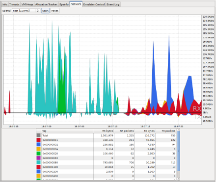

In this document
Android ships with a debugging tool called the Dalvik Debug Monitor Server (DDMS), which provides port-forwarding services, screen capture on the device, thread and heap information on the device, logcat, process, and radio state information, incoming call and SMS spoofing, location data spoofing, and more. This page provides a modest discussion of DDMS features; it is not an exhaustive exploration of all the features and capabilities.
Running DDMS
DDMS is integrated into Eclipse and is also shipped in the tools/ directory of the
SDK. DDMS works with both the emulator and a connected device. If both are connected and running simultaneously,
DDMS defaults to the emulator.
- From Eclipse: Click Window > Open Perspective > Other... > DDMS.
- From the command line: Type
ddms(or./ddmson Mac/Linux) from thetools/directory.
How DDMS Interacts with a Debugger
On Android, every application runs in its own process, each of which runs in its own virtual machine (VM). Each VM exposes a unique port that a debugger can attach to.
When DDMS starts, it connects to adb.
When a device is connected, a VM monitoring service is created between
adb and DDMS, which notifies DDMS when a VM on the device is started or terminated. Once a VM
is running, DDMS retrieves the VM's process ID (pid), via adb, and opens a connection to the
VM's debugger, through the adb daemon (adbd) on the device. DDMS can now talk to the VM using a
custom wire protocol.
DDMS assigns a debugging port to each VM on the device. Typically, DDMS assigns port 8600 for the first debuggable VM, the next on 8601, and so on. When a debugger connects to one of these ports, all traffic is forwarded to the debugger from the associated VM. You can only attach a single debugger to a single port, but DDMS can handle multiple, attached debuggers.
By default, DDMS also listens on another debugging port, the DDMS "base port" (8700, by default). The base port is a port forwarder, which can accept VM traffic from any debugging port and forward it to the debugger on port 8700. This allows you to attach one debugger to port 8700, and debug all the VMs on a device. The traffic that is forwarded is determined by the currently selected process in the DDMS Devices view.
The following screenshot shows a typical DDMS screen in Eclipse. If you are starting DDMS from
the command line, the screen is slightly different, but much of the functionality is identical.
Notice that the highlighted process, com.android.email, that is running in the emulator
has the debugging port 8700 assigned to it as well as 8606. This signifies that DDMS is currently
forwarding port 8606 to the static debugging port of 8700.
Figure 1. Screenshot of DDMS
If you are not using Eclipse and ADT, read Configuring your IDE to attach to the debugging port, for more information on attaching your debugger.
Tip: You can set a number of DDMS preferences in
File > Preferences. Preferences are saved to
$HOME/.android/ddms.cfg.
Known debugging issues with Dalvik
Debugging an application in the Dalvik VM should work the same as it does in other VMs. However,
when single-stepping out of synchronized code, the "current line" cursor may jump to the last
line in the method for one step.
Using DDMS
The following sections describe how to use DDMS and the various tabs and panes that are part of the DDMS GUI. The Eclipse version and the command line version have minor UI differences, but the same functionality. For information on running DDMS, see the previous section in this document, Running DDMS.Viewing heap usage for a process
DDMS allows you to view how much heap memory a process is using. This information is useful in tracking heap usage at a certain point of time during the execution of your application.
To view heap usage for a process:
- In the Devices tab, select the process that you want to see the heap information for.
- Click the Update Heap button to enable heap information for the process.
- In the Heap tab, click Cause GC to invoke garbage collection, which enables the collection of heap data. When the operation completes, you will see a group of object types and the memory that has been allocated for each type. You can click Cause GC again to refresh the data.
- Click on an object type in the list to see a bar graph that shows the number of objects allocated for a particular memory size in bytes.
Tracking memory allocation of objects
DDMS provides a feature to track objects that are being allocated to memory and to see which classes and threads are allocating the objects. This allows you to track, in real time, where objects are being allocated when you perform certain actions in your application. This information is valuable for assessing memory usage that can affect application performance.
To track memory allocation of objects:
- In the Devices tab, select the process that you want to enable allocation tracking for.
- In the Allocation Tracker tab, click the Start Tracking button to begin allocation tracking. At this point, anything you do in your application will be tracked.
- Click Get Allocations to see a list of objects that have been allocated since you clicked on the Start Tracking button. You can click on Get Allocations again to append to the list new objects that that have been allocated.
- To stop tracking or to clear the data and start over, click the Stop Tracking button.
- Click on a specific row in the list to see more detailed information such as the method and line number of the code that allocated the object.
Working with an emulator or device's file system
DDMS provides a File Explorer tab that allows you to view, copy, and delete files on the device. This feature is useful in examining files that are created by your application or if you want to transfer files to and from the device.
To work with an emulator or device's file system:
- In the Devices tab, select the emulator that you want to view the file system for.
- To copy a file from the device, locate the file in the File Explorer and click the Pull file button.
- To copy a file to the device, click the Push file button on the File Explorer tab.
Examining thread information
The Threads tab in DDMS shows you the currently running threads for a selected process.
- In the Devices tab, select the process that you want to examine the threads for.
- Click the Update Threads button.
- In the Threads tab, you can view the thread information for the selected process.
Starting method profiling
Method profiling is a means to track certain metrics about a method, such as number of calls,
execution time, and time spent executing the method. If you want more granular control over
where profiling data is collected, use the startMethodTracing() and
stopMethodTracing() methods. For more information about generating trace logs, see
Profiling and Debugging UIs.
Before you start method profiling in DDMS, be aware of the following restrictions:
- Android 2.1 and earlier devices must have an SD card present and your application must have permission to write to the SD card.
- Android 2.2 and later devices do not need an SD card. The trace log files are streamed directly to your development machine.
To start method profiling:
- On the Devices tab, select the process that you want to enable method profiling for.
- Click the Start Method Profiling button.
- Interact with your application to start the methods that you want to profile.
- Click the Stop Method Profiling button. DDMS stops profiling your application and opens Traceview with the method profiling information that was collected between the time you clicked on Start Method Profiling and Stop Method Profiling.
Using the Network Traffic tool
In Android 4.0, the DDMS (Dalvik Debug Monitor Server) includes a Detailed Network Usage tab that makes it possible to track when your application is making network requests. Using this tool, you can monitor how and when your app transfers data and optimize the underlying code appropriately. You can also distinguish between different traffic types by applying a “tag” to network sockets before use.
These tags are shown in a stack area chart in DDMS, as shown in figure 2:
Figure 2. Network Usage tab.
By monitoring the frequency of your data transfers, and the amount of data transferred during each connection, you can identify areas of your application that can be made more battery-efficient. Generally, you should look for short spikes that can be delayed, or that should cause a later transfer to be pre-empted.
To better identify the cause of transfer spikes, the
TrafficStats API allows you
to tag the data transfers occurring within a thread using setThreadStatsTag(), followed
by manually tagging (and untagging) individual sockets using tagSocket() and untagSocket(). For example:
TrafficStats.setThreadStatsTag(0xF00D); TrafficStats.tagSocket(outputSocket); // Transfer data using socket TrafficStats.untagSocket(outputSocket);
Alternatively, the Apache HttpClient and
URLConnection APIs included in the platform
automatically tag sockets internally based on the active tag (as
identified by
getThreadStatsTag()).
These APIs correctly tag/untag sockets when recycled through
keep-alive pools. In the following example,
setThreadStatsTag()
sets the active tag to be 0xF00D.
There can only be one active tag per thread.
That is the value that will
be returned by getThreadStatsTag()
and thus used by HttpClient
to tag sockets. The finally statement
invokes
clearThreadStatsTag()
to clear the tag.
TrafficStats.setThreadStatsTag(0xF00D);
try {
// Make network request using HttpClient.execute()
} finally {
TrafficStats.clearThreadStatsTag();
}
Socket tagging is supported in Android 4.0, but real-time stats will only be displayed on devices running Android 4.0.3 or higher.
Using LogCat
LogCat is integrated into DDMS, and outputs the messages that you print out using the Log
class along with other system messages such as stack traces when exceptions are thrown. View the
Reading and
Writing Log Messages. topic for more information on how to log messages to the LogCat.
When you have set up your logging, you can use the LogCat feature of DDMS to filter certain messages with the following buttons:
- Verbose
- Debug
- Info
- Warn
- Error
You can also setup your own custom filter to specify more details such as filtering messages with the log tags or with the process id that generated the log message. The add filter, edit filter, and delete filter buttons let you manage your custom filters.
Emulating phone operations and location
The Emulator control tab lets you simulate a phone's voice and data network status. This is useful when you want to test your application's robustness in differing network environments.
Changing network state, speed, and latency
The Telephony Status section of the Emulator controls tab lets you change different aspects of the phone's networks status, speed and latency. The following options are available to you and are effective immediately after you set them:
- Voice - unregistered, home, roaming, searching, denied
- Data - unregistered, home, roaming, searching, denied
- Speed - Full, GSM, HSCSD, GPRS, EDGE, UMTS, HSDPA
- Latency - GPRS, EDGE, UMTS
Spoofing calls or SMS text messages
The Telephony Actions section of the Emulator controls tab lets you spoof calls and messages. This is useful when you want to to test your application's robustness in responding to incoming calls and messages that are sent to the phone. The following actions are available to you:
- Voice - Enter a number in the Incoming number field and click Call to send a simulated call to the emulator or phone. Click the Hang up button to terminate the call.
- SMS - Enter a number in the Incoming number field and a message in the Message: field and click the Send button to send the message.
Setting the location of the phone
If your application depends on the location of the phone, you can have DDMS send your device or AVD a mock location. This is useful if you want to test different aspects of your application's location specific features without physically moving. The following geolocation data types are available to you:
- Manual - set the location by manually specifying decimal or sexagesimal longitude and latitude values.
- GPX - GPS eXchange file
- KML - Keyhole Markup Language file